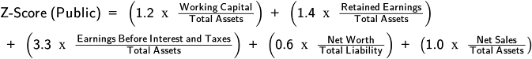
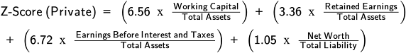
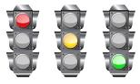
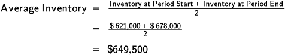
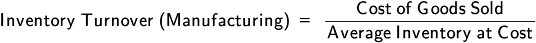
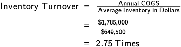
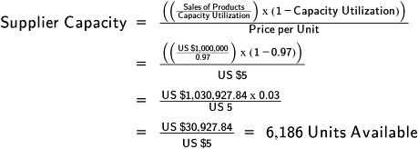

The seven basic tools of quality and the seven new tools of quality are described here.
Seven Basic Tools of Quality
The seven basic tools of quality are a set of tools that help organizations understand their processes in order to improve them. These tools (also known as B7) include process mapping, control chart analysis, the Pareto chart, the cause-and-effect diagram, the histogram, the check sheet, and the scatter chart.
Process Map
📖 ASCM Definition — process map (or flowchart):
Process maps can be used to map all types of processes—manufacturing flow, information flow, the stages of a financial transaction, and so on. Mapping the process helps members of an improvement team identify significant aspects of an inefficient or ineffective process and then locate the problem areas. In addition to illustrating each step in a process, the chart or map can include other useful information such as the duration of each step, required resources, responsible positions, and financial impact. Process maps can be produced with pencil and paper, but they can also be put into various types of software.
Exhibit 4-38 shows a typical process map in the form of a flowchart, depicting the order fulfillment process.

One way to carry out process mapping is to schedule it as a brainstorming session for the improvement team. Using Post-it® Notes, each team member individually lists every task he or she can identify in the process, one per note. After a half hour (or other appropriate time), team members stick the notes with the task listings on the chalkboard, one person at a time, while others continue thinking and writing. When all tasks have been posted, individuals or teams attempt to group the tasks by themes and put the groups in the order of performance. Next the group selects names for the themes, and a volunteer writes a final list of tasks, by theme, on a flip chart. At the end of the session, the entire process should be mapped, with all essential tasks in order and associated with the names of performers and the time each takes.
Control Chart
The control chart, according to the ASCM Supply Chain Dictionary, provides "a graphic comparison of process performance data with predetermined computed control limits."
Control charts are useful graphical tools to differentiate special cause variation and common cause variation in a given process. This activity is called statistical process control (SPC) (or statistical quality control when acceptance sampling is also included) and is defined in the ASCM Supply Chain Dictionary as "the application of statistical techniques to monitor and adjust an operation."
Exhibit 4-39 illustrates a control chart with a center line representing the mean value and upper and lower control limits (UCL and LCL) representing plus or minus 3 sigmas from the center line respectively. In general, if the data readings taken fall within the control limits, the process variation is considered to be in control. In this chart all the opportunities fall within the acceptable range.

In addition to control limits, which are set using statistics, a process used to produce a product or service can also have specification limits, which are set by the customer. Like the control limits, there is an upper and lower specification limit (USL and LSL). If the process commonly has results outside these limits, there will be many rejected units and the process would need to be reviewed to make failures far less common.
Pareto Chart
Pareto analysis, which shows the frequency of items in a data set, is based on Pareto's law, defined in the ASCM Supply Chain Dictionary as "a concept developed by Vilfredo Pareto, an Italian economist, that states that a small percentage of a group accounts for the largest fraction of its impact or value." Closely associated with Pareto's law is 80-20, a principle that "suggests that most effects come from relatively few causes; that is, 80 percent of the effects (or sales or costs) come from 20 percent of the possible causes (or items)" (ASCM Supply Chain Dictionary).
📖 ASCM Definition — Pareto chart (or diagram):
Pareto charts can be applied to any measurable data, including currency units, time, defects, suppliers, etc. Exhibit 4-40 illustrates the basic shape of a Pareto chart. After determining the categories for the bars, the bars are always ranked from highest to lowest. The set of bars that make about 80 percent of the causes would be the vital few causes to study. Here the largest bar is 80 percent on its own and is the major cause of the particular occurrence.

Cause-and-Effect Diagram
A cause-and-effect diagram links an effect with the possible causes of the effect. It is a method of organizing factors (causes) and subcauses that affect a problem or process being investigated (effect). This type of diagram may also be called an Ishikawa diagram, after the person who first developed it, or a fishbone diagram, as the elements of the diagram resemble the skeleton of a fish. The goal of a cause-and-effect diagram is to identify all of the possible causes of an effect and then select the most likely ones for further investigation. The idea is to find the root cause of the effect in order to correct and solve the problem for the long term.
Exhibit 4-41 illustrates a cause-and-effect diagram showing commonly cited categories of causes (environment, people, materials, measurement, methods, and equipment). For every cause, there are usually several potential underlying subcauses (such as equipment failure or no maintenance performed). The development of a cause-and-effect diagram is a repetitive process that requires going back and forth to identify causes and effects.

Eliminating the underlying root cause of a defect can bring a process into conformance, while attacking a secondary symptom or the wrong cause may do little or nothing to eliminate the customer complaints.
For example, sometimes training to improve employee skills will be suggested as a solution for a problem, when in fact employee skill or understanding is not the real source of the difficulty. If a system is broken, no amount of employee training will fix it. Let's say a financial service provider is receiving a high rate of complaints from customers who can't understand their account reports, and the company responds by training sales assistants to give better explanations of the reports when customers call in to complain. The documents are the root cause of the problem, and the training is not the most efficient way to invest to provide what customers need.
The Japanese have a method of approaching root cause analysis called the "Five Whys," because it is based on the theory that answering a question about causation five times will lead you through the false causes or symptoms to the real cause. Whether or not five is the magic number is less important than the underlying concept.
Finding root causes may take considerable digging through layers of superficial symptoms or secondary problems. An automotive company, as an example, conducted customer interviews to determine why they were receiving complaints that the seats in their cars were too low. Since that complaint was factually inaccurate, the researchers probed more deeply and discovered that the problem could be resolved by setting the side window ledges lower in the doors. The answer "low seats" was superficial. The root cause of the complaint was really about the relative placement of the windows.
Histogram
A histogram is a bar graph that displays the frequency distribution of measurement data, such as dimensions, temperature, or weight, for a process. It shows the amount of variation and the range of variation within a process. The frequency is shown on the y (vertical) axis. The x axis shows the range of variation.
The goal is to identify whether
There are surprises like unnatural distributions. (A bell-shaped distribution demonstrates that the largest number of measured units is in the center, with about half that number falling on either side. Twin peaks may indicate that data are coming from two or more sources that have variation, like different shifts or production equipment.)
The variation of the bar graphs falls within or outside of specifications, indicating the amount of variability or number of failures.
The top portion of the bell curve is in the middle or at either end, indicating that the data are skewed. (For example, if a pizza company studies the amount of toppings added to an average pizza, a person who always adds more than the recommended amounts would have results that skew toward the high end.)
At first glance it may seem that the Pareto tool is a histogram, but it is a different type of bar chart. The Pareto chart illustrates only the categories of an issue, such as type of defects, rather than showing a continuous range of data, as a histogram does. Exhibit 4-42 shows an example of a histogram.

Check Sheet
A check sheet is a simple and easy-to-use tool for summarizing a tally count of event occurrences such as the frequency of certain defects in a product in a specified period of time. In Exhibit 4-43, for instance, a manufacturer of fabric hearts uses a hash mark (or slash mark) to record every time an item is either too pink, too red, lacks fragrance, or is the wrong size in the first four days of production runs in February.
This is often the starting point in continuous improvement projects that can then be further explored using other CI tools. It's important that the data gathered are from a single entity, such as the same piece of equipment or a particular production line employee. In addition, it is critical to ensure that the observations recorded are representative and that the team members who create the check sheets have sufficient time to do it accurately.

Scatter Chart
A scatter chart—also known as a cross plot, scatter diagram, or scatterplot—is a tool for showing the relationship of two variables in terms of whether they are interdependent and to what extent. The diagram has a horizontal x axis and vertical y axis that represent the two variables being tested. The y axis is typically for the dependent variable, that is, the one that changes in relation to variable x, which is called the independent variable. The direction of the scattered points and their closeness to each other and an overall trend line indicate the type and strength of the correlation.
Exhibit 4-44 shows a scatter chart.
As seen in the exhibit, if you were to draw a diagonal line from the interior corner of the graph to the points in the upper right portion, it would be easy to see that the points are fairly close together and that they trend upward and to the right. This shows a positive correlation between the two variables, such as training and job performance, which means that an increase in y may be dependent upon an increase in x and therefore, if x can be controlled, there might also be a chance of influencing y. In other words, an increase in task competency could be linked to an increase in the number of hours of task training received by an employee in the supply chain. (If the points were more scattered but formed the same shape, there would be less positive correlation.) In another example, a scatter chart can be used for associative forecasting (such as regression analysis), in which case the independent variable is used to predict how the dependent variable should behave in the future.
Seven New Tools
In the mid-1970s, a consortium of Japanese engineers and scientists discussed the need to augment the seven basic tools of quality with an additional set that could enable them to express important production-related information, support innovation, and facilitate the planning of major projects. They wanted to be able to communicate important information that could be put into action.
With those goals in mind, they developed seven management and planning tools:
Affinity diagram
Tree diagram
Matrix diagram
Process decision program chart
Relationship diagram
Matrix data analysis chart
Activity network diagram
Affinity Diagram
An affinity diagram is a tool for organizing a large number of brainstormed ideas by employees striving to solve a particular issue. Participants in the brainstorming session provide anonymous ideas and suggestions and, based on the number of them that relate to each topic, the group can get a sense as to the seriousness of the issue. It begins with a discussion leader presenting the topic or problem, which the employees then brainstorm about, recording each idea on a slip of paper or an index card. The ideas are then posted in one place, and the group determines how to group them by category or theme.
As seen in Exhibit 4-45, each group of ideas is then given a descriptive title that encompasses the ideas below it. In this case, the challenge was trying to identify causes of product recall for a manufacturer. The group generated causes that fell into these six broad categories: inspection, customer feedback, product materials, frequency, costs, and return processes.
This tool tends to provide new and more comprehensive insights into an issue that can become an official continuous improvement project. Then other tools can be used to further investigate each category.
Tree Diagram
A tree diagram is a tool that lists tasks and activities in increasingly finer detail in order to meet a specific goal. As seen in Exhibit 4-46, the goal is on the left-hand side and the main branches of the tree "bloom" off of that. Each branch helps to clarify another aspect of the issue. The tree diagram can be used in conjunction with the affinity diagram and the relationship diagram.

Matrix Diagram
The matrix diagram (matrix chart) is a useful tool for showing the relationships between two or more groups of information, the strengths of those relationships, and how those variables interact and respond to each other. Matrix diagrams can be in a variety of shapes: L, T, Y, C, X, and roof-shaped. The most commonly used is the L-shaped matrix, which illustrates how two groups of items relate to each other or one group to itself. As illustrated in Exhibit 4-47, this matrix shows how specifications for a product vary from one customer to the next.
Process Decision Program Chart
The process decision program chart visually captures things that might possibly go wrong in a plan being developed. In Exhibit 4-48, the decision to increase shelf space was mapped out to determine all the related points that could influence a sequence of decisions as to how to reach the goal of achieving a good allotment of space.

This tool can be used in two different manners: to identify measures that should be taken in order to avoid undesirable, intermediate consequences as progress is made toward the final desired result, and to design a plan to predict future foreseeable problems that can be resolved and ultimately result in achievement of the goal.
Relationship Diagram
The relationship diagram, also called an interrelationship diagram, illustrates cause-and-effect relationships and is particularly useful for evaluating the links between different aspects of a complicated issue. As seen in Exhibit 4-49, the ideas that a team generates are placed in their own respective circles and clustered according to how they may relate to each other. Solid-line arrows are then drawn from each idea that strongly influences another idea. A dashed arrow implies that there is some influence but it is not strong.

The goal is to identify the following:
- The major cause, that is, the one that has the greatest number of arrows emanating from it
- The most interrelated cause, that is, the one with the most arrows in and out
In this instance, the diagram began with an increase in customer complaints, which had previously been at a minimum level. The team wanted to identify what could be the possible direct and indirect causes of that increase. They concluded that there are four factors that were about equally responsible for the issue. The team decided they would need to do additional analysis of those factors, after which they would be better able to stratify the complaints.
Matrix Data Analysis Chart
The matrix data analysis chart is another tool that can be used to show the relationship between groups of information. As seen in Exhibit 4-50, the two variables (or features) against which the product lines are being measured are opacity and insulating properties. The closer the product line point is to the positive end of each variable, the stronger the feature is for that line, and vice versa. For instance, the wood louvers (product line B) of this manufacturer have significantly higher ratings on opacity and insulating capabilities compared to product lines C and D in the lower left quadrant. This tool can be useful when trying to differentiate marketing messages and compare seemingly similar products.
Activity Network Diagram
The activity network diagram, also sometimes referred to as the arrow diagram or critical path method chart, is particularly helpful when an improvement team wants to identify the required order of tasks within a manufacturing process or project. Its primary benefit is to convey dependencies and simultaneous activities via a simple visual. This chart is critical for project management. Exhibit 4-51 shows an example.

Using the Tools
As you contemplate the 14 quality tools (the seven basic tools and the seven new tools) from which you can select for any continuous improvement project, it will be useful to think about them in the following categories and select the one tool or combination of tools that matches what you are trying to capture:
- Nonquantitative tools: process flow chart or mapping, cause-and-effect diagram, affinity diagram, tree diagram, process decision program chart, relationship diagram, activity network diagram
- Combination tools: matrix diagram (if using points on the diagram that reflect measured data)
- Quantitative tools: scatter diagram, Pareto chart, run chart, histogram, control chart
What's important to remember is that if you have used a tool that did not result in actionable information, you may need to try another for the same task. However, if you think of your tools in these three categories it will be easier to determine which is the most appropriate. It may be appropriate to use a few tools on the same issue to drill down to the details needed.